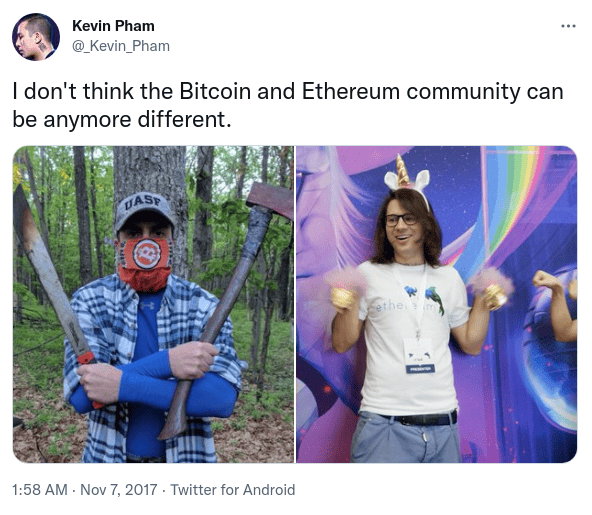
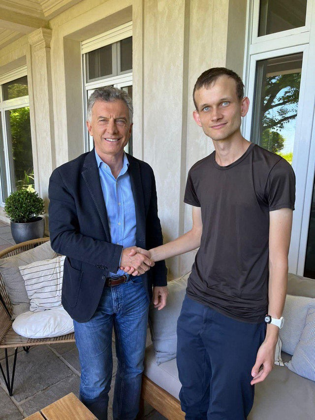
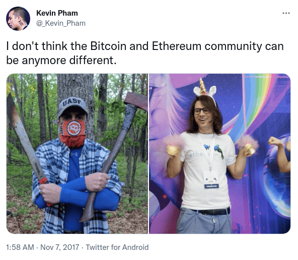
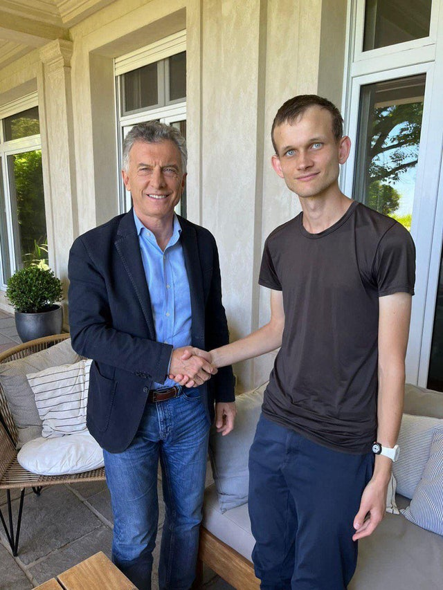

In Defense of Bitcoin Maximalism
2022 Apr 01
See all posts
In Defense of Bitcoin Maximalism
We've been hearing for years that the future is blockchain, not Bitcoin. The future of the world won't be one major cryptocurrency, or even a few, but many cryptocurrencies - and the winning ones will have strong leadership under one central roof to adapt rapidly to users' needs for scale. Bitcoin is a boomer coin, and Ethereum is soon to follow; it will be newer and more energetic assets that attract the new waves of mass users who don't care about weird libertarian ideology or "self-sovereign verification", are turned off by toxicity and anti-government mentality, and just want blockchain defi and games that are fast and work.
But what if this narrative is all wrong, and the ideas, habits and practices of Bitcoin maximalism are in fact pretty close to correct? What if Bitcoin is far more than an outdated pet rock tied to a network effect? What if Bitcoin maximalists actually deeply understand that they are operating in a very hostile and uncertain world where there are things that need to be fought for, and their actions, personalities and opinions on protocol design deeply reflect that fact? What if we live in a world of honest cryptocurrencies (of which there are very few) and grifter cryptocurrencies (of which there are very many), and a healthy dose of intolerance is in fact necessary to prevent the former from sliding into the latter? That is the argument that this post will make.
We live in a dangerous world, and protecting freedom is serious business
Hopefully, this is much more obvious now than it was six weeks ago, when many people still seriously thought that Vladimir Putin is a misunderstood and kindly character who is merely trying to protect Russia and save Western Civilization from the gaypocalypse. But it's still worth repeating. We live in a dangerous world, where there are plenty of bad-faith actors who do not listen to compassion and reason.
A blockchain is at its core a security technology - a technology that is fundamentally all about protecting people and helping them survive in such an unfriendly world. It is, like the Phial of Galadriel, "a light to you in dark places, when all other lights go out". It is not a low-cost light, or a fluorescent hippie energy-efficient light, or a high-performance light. It is a light that sacrifices on all of those dimensions to optimize for one thing and one thing only: to be a light that does when it needs to do when you're facing the toughest challenge of your life and there is a friggin twenty foot spider staring at you in the face.

Source: https://www.blackgate.com/2014/12/23/frodo-baggins-lady-galadriel-and-the-games-of-the-mighty/
Blockchains are being used every day by unbanked and underbanked people, by activists, by sex workers, by refugees, and by many other groups either who are uninteresting for profit-seeking centralized financial institutions to serve, or who have enemies that don't want them to be served. They are used as a primary lifeline by many people to make their payments and store their savings.
And to that end, public blockchains sacrifice a lot for security:
- Blockchains require each transaction to be independently verified thousands of times to be accepted.
- Unlike centralized systems that confirm transactions in a few hundred milliseconds, blockchains require users to wait anywhere from 10 seconds to 10 minutes to get a confirmation.
- Blockchains require users to be fully in charge of authenticating themselves: if you lose your key, you lose your coins.
- Blockchains sacrifice privacy, requiring even crazier and more expensive technology to get that privacy back.
What are all of these sacrifices for? To create a system that can survive in an unfriendly world, and actually do the job of being "a light in dark places, when all other lights go out".
Excellent at that task requires two key ingredients: (i) a robust and defensible technology stack and (ii) a robust and defensible culture. The key property to have in a robust and defensible technology stack is a focus on simplicity and deep mathematical purity: a 1 MB block size, a 21 million coin limit, and a simple Nakamoto consensus proof of work mechanism that even a high school student can understand. The protocol design must be easy to justify decades and centuries down the line; the technology and parameter choices must be a work of art.
The second ingredient is the culture of uncompromising, steadfast minimalism. This must be a culture that can stand unyieldingly in defending itself against corporate and government actors trying to co-opt the ecosystem from outside, as well as bad actors inside the crypto space trying to exploit it for personal profit, of which there are many.
Now, what do Bitcoin and Ethereum culture actually look like? Well, let's ask Kevin Pham:

Don't believe this is representative? Well, let's ask Kevin Pham again:

Now, you might say, this is just Ethereum people having fun, and at the end of the day they understand what they have to do and what they are dealing with. But do they? Let's look at the kinds of people that Vitalik Buterin, the founder of Ethereum, hangs out with:
|

Vitalik hangs out with elite tech CEOs in Beijing, China.
|
Vitalik meets Vladimir Putin in Russia.
|
|

Vitalik meets Nir Bakrat, mayor of Jerusalem.
|

Vitalik shakes hands with Argentinian former president Mauricio Macri.
|
|

Vitalik gives a friendly hello to Eric Schmidt, former CEO of Google and advisor to US Department of Defense.
|
Vitalik has his first of many meetings with Audrey Tang, digital minister of Taiwan.
|
And this is only a small selection. The immediate question that anyone looking at this should ask is: what the hell is the point of publicly meeting with all these people? Some of these people are very decent entrepreneurs and politicians, but others are actively involved in serious human rights abuses that Vitalik certainly does not support. Does Vitalik not realize just how much some of these people are geopolitically at each other's throats?
Now, maybe he is just an idealistic person who believes in talking to people to help bring about world peace, and a follower of Frederick Douglass's dictum to "unite with anybody to do right and with nobody to do wrong". But there's also a simpler hypothesis: Vitalik is a hippy-happy globetrotting pleasure and status-seeker, and he deeply enjoys meeting and feeling respected by people who are important. And it's not just Vitalik; companies like Consensys are totally happy to partner with Saudi Arabia, and the ecosystem as a whole keeps trying to look to mainstream figures for validation.
Now ask yourself the question: when the time comes, actually important things are happening on the blockchain - actually important things that offend people who are powerful - which ecosystem would be more willing to put its foot down and refuse to censor them no matter how much pressure is applied on them to do so? The ecosystem with globe-trotting nomads who really really care about being everyone's friend, or the ecosystem with people who take pictures of themslves with an AR15 and an axe as a side hobby?
Currency is not "just the first app". It's by far the most successful one.
Many people of the "blockchain, not Bitcoin" persuasion argue that cryptocurrency is the first application of blockchains, but it's a very boring one, and the true potential of blockchains lies in bigger and more exciting things. Let's go through the list of applications in the Ethereum whitepaper:
- Issuing tokens
- Financial derivatives
- Stablecoins
- Identity and reputation systems
- Decentralized file storage
- Decentralized autonomous organizations (DAOs)
- Peer-to-peer gambling
- Prediction markets
Many of these categories have applications that have launched and that have at least some users. That said, cryptocurrency people really value empowering under-banked people in the "Global South". Which of these applications actually have lots of users in the Global South?
As it turns out, by far the most successful one is storing wealth and payments. 3% of Argentinians own cryptocurrency, as do 6% of Nigerians and 12% of people in Ukraine. By far the biggest instance of a government using blockchains to accomplish something useful today is cryptocurrency donations to the government of Ukraine, which have raised more than $100 million if you include donations to non-governmental Ukraine-related efforts.

What other application has anywhere close to that level of actual, real adoption today? Perhaps the closest is ENS. DAOs are real and growing, but today far too many of them are appealing to wealthy rich-country people whose main interest is having fun and using cartoon-character profiles to satisfy their first-world need for self-expression, and not build schools and hospitals and solve other real world problems.
Thus, we can see the two sides pretty clearly: team "blockchain", privileged people in wealthy countries who love to virtue-signal about "moving beyond money and capitalism" and can't help being excited about "decentralized governance experimentation" as a hobby, and team "Bitcoin", a highly diverse group of both rich and poor people in many countries around the world including the Global South, who are actually using the capitalist tool of free self-sovereign money to provide real value to human beings today.
Focusing exclusively on being money makes for better money
A common misconception about why Bitcoin does not support "richly stateful" smart contracts goes as follows. Bitcoin really really values being simple, and particularly having low technical complexity, to reduce the chance that something will go wrong. As a result, it doesn't want to add the more complicated features and opcodes that are necessary to be able to support more complicated smart contracts in Ethereum.
This misconception is, of course, wrong. In fact, there are plenty of ways to add rich statefulness into Bitcoin; search for the word "covenants" in Bitcoin chat archives to see many proposals being discussed. And many of these proposals are surprisingly simple. The reason why covenants have not been added is not that Bitcoin developers see the value in rich statefulness but find even a little bit more protocol complexity intolerable. Rather, it's because Bitcoin developers are worried about the risks of the systemic complexity that rich statefulness being possible would introduce into the ecosystem!

A recent paper by Bitcoin researchers describes some ways to introduce covenants to add some degree of rich statefulness to Bitcoin.
Ethereum's battle with miner-extractable value (MEV) is an excellent example of this problem appearing in practice. It's very easy in Ethereum to build applications where the next person to interact with some contract gets a substantial reward, causing transactors and miners to fight over it, and contributing greatly to network centralization risk and requiring complicated workarounds. In Bitcoin, building such systemically risky applications is hard, in large part because Bitcoin lacks rich statefulness and focuses on the simple (and MEV-free) use case of just being money.
Systemic contagion can happen in non-technical ways too. Bitcoin just being money means that Bitcoin requires relatively few developers, helping to reduce the risk that developers will start demanding to print themselves free money to build new protocol features. Bitcoin just being money reduces pressure for core developers to keep adding features to "keep up with the competition" and "serve developers' needs".
In so many ways, systemic effects are real, and it's just not possible for a currency to "enable" an ecosystem of highly complex and risky decentralized applications without that complexity biting it back somehow. Bitcoin makes the safe choice. If Ethereum continues its layer-2-centric approach, ETH-the-currency may gain some distance from the application ecosystem that it's enabling and thereby get some protection. So-called high-performance layer-1 platforms, on the other hand, stand no chance.
In general, the earliest projects in an industry are the most "genuine"
Many industries and fields follow a similar pattern. First, some new exciting technology either gets invented, or gets a big leap of improvement to the point where it's actually usable for something. At the beginning, the technology is still clunky, it is too risky for almost anyone to touch as an investment, and there is no "social proof" that people can use it to become successful. As a result, the first people involved are going to be the idealists, tech geeks and others who are genuinely excited about the technology and its potential to improve society.
Once the technology proves itself enough, however, the normies come in - an event that in internet culture is often called Eternal September. And these are not just regular kindly normies who want to feel part of something exciting, but business normies, wearing suits, who start scouring the ecosystem wolf-eyed for ways to make money - with armies of venture capitalists just as eager to make their own money supporting them from the sidelines. In the extreme cases, outright grifters come in, creating blockchains with no redeeming social or technical value which are basically borderline scams. But the reality is that the line from "altruistic idealist" and "grifter" is really a spectrum. And the longer an ecosystem keeps going, the harder it is for any new project on the altruistic side of the spectrum to get going.
One noisy proxy for the blockchain industry's slow replacement of philosophical and idealistic values with short-term profit-seeking values is the larger and larger size of premines: the allocations that developers of a cryptocurrency give to themselves.

Source for insider allocations: Messari.
Which blockchain communities deeply value self-sovereignty, privacy and decentralization, and are making to get big sacrifices to get it? And which blockchain communities are just trying to pump up their market caps and make money for founders and investors? The above chart should make it pretty clear.
Intolerance is good
The above makes it clear why Bitcoin's status as the first cryptocurrency gives it unique advantages that are extremely difficult for any cryptocurrency created within the last five years to replicate. But now we get to the biggest objection against Bitcoin maximalist culture: why is it so toxic?
The case for Bitcoin toxicity stems from Conquest's second law. In Robert Conquest's original formulation, the law says that "any organization not explicitly and constitutionally right-wing will sooner or later become left-wing". But really, this is just a special case of a much more general pattern, and one that in the modern age of relentlessly homogenizing and conformist social media is more relevant than ever:
If you want to retain an identity that is different from the mainstream, then you need a really strong culture that actively resists and fights assimilation into the mainstream every time it tries to assert its hegemony.
Blockchains are, as I mentioned above, very fundamentally and explicitly a counterculture movement that is trying to create and preserve something different from the mainstream. At a time when the world is splitting up into great power blocs that actively suppress social and economic interaction between them, blockchains are one of the very few things that can remain global. At a time when more and more people are reaching for censorship to defeat their short-term enemies, blockchains steadfastly continue to censor nothing.

The only correct way to respond to "reasonable adults" trying to tell you that to "become mainstream" you have to compromise on your "extreme" values. Because once you compromise once, you can't stop.
Blockchain communities also have to fight bad actors on the inside. Bad actors include:
- Scammers, who make and sell projects that are ultimately valueless (or worse, actively harmful) but cling to the "crypto" and "decentralization" brand (as well as highly abstract ideas of humanism and friendship) for legitimacy.
- Collaborationists, who publicly and loudly virtue-signal about working together with governments and actively try to convince governments to use coercive force against their competitors.
- Corporatists, who try to use their resources to take over the development of blockchains, and often push for protocol changes that enable centralization.
One could stand against all of these actors with a smiling face, politely telling the world why they "disagree with their priorities". But this is unrealistic: the bad actors will try hard to embed themselves into your community, and at that point it becomes psychologically hard to criticize them with the sufficient level of scorn that they truly require: the people you're criticizing are friends of your friends. And so any culture that values agreeableness will simply fold before the challenge, and let scammers roam freely through the wallets of innocent newbies.
What kind of culture won't fold? A culture that is willing and eager to tell both scammers on the inside and powerful opponents on the outside to go the way of the Russian warship.
Weird crusades against seed oils are good
One powerful bonding tool to help a community maintain internal cohesion around its distinctive values, and avoid falling into the morass that is the mainstream, is weird beliefs and crusades that are in a similar spirit, even if not directly related, to the core mission. Ideally, these crusades should be at least partially correct, poking at a genuine blind spot or inconsistency of mainstream values.
The Bitcoin community is good at this. Their most recent crusade is a war against seed oils, oils derived from vegetable seeds high in omega-6 fatty acids that are harmful to human health.

This Bitcoiner crusade gets treated skeptically when reviewed in the media, but the media treats the topic much more favorably when "respectable" tech firms are tackling it. The crusade helps to remind Bitcoiners that the mainstream media is fundamentally tribal and hypocritical, and so the media's shrill attempts to slander cryptocurrency as being primarily for money laundering and terrorism should be treated with the same level of scorn.
Be a maximalist
Maximalism is often derided in the media as both a dangerous toxic right-wing cult, and as a paper tiger that will disappear as soon as some other cryptocurrency comes in and takes over Bitcoin's supreme network effect. But the reality is that none of the arguments for maximalism that I describe above depend at all on network effects. Network effects really are logarithmic, not quadratic: once a cryptocurrency is "big enough", it has enough liquidity to function and multi-cryptocurrency payment processors will easily add it to their collection. But the claim that Bitcoin is an outdated pet rock and its value derives entirely from a walking-zombie network effect that just needs a little push to collapse is similarly completely wrong.
Crypto-assets like Bitcoin have real cultural and structural advantages that make them powerful assets worth holding and using. Bitcoin is an excellent example of the category, though it's certainly not the only one; other honorable cryptocurrencies do exist, and maximalists have been willing to support and use them. Maximalism is not just Bitcoin-for-the-sake-of-Bitcoin; rather, it's a very genuine realization that most other cryptoassets are scams, and a culture of intolerance is unavoidable and necessary to protect newbies and make sure at least one corner of that space continues to be a corner worth living in.
It's better to mislead ten newbies into avoiding an investment that turns out good than it is to allow a single newbie to get bankrupted by a grifter.
It's better to make your protocol too simple and fail to serve ten low-value short-attention-span gambling applications than it is to make it too complex and fail to serve the central sound money use case that underpins everything else.
And it's better to offend millions by standing aggressively for what you believe in than it is to try to keep everyone happy and end up standing for nothing.
Be brave. Fight for your values. Be a maximalist.
In Defense of Bitcoin Maximalism
2022 Apr 01 See all postsWe've been hearing for years that the future is blockchain, not Bitcoin. The future of the world won't be one major cryptocurrency, or even a few, but many cryptocurrencies - and the winning ones will have strong leadership under one central roof to adapt rapidly to users' needs for scale. Bitcoin is a boomer coin, and Ethereum is soon to follow; it will be newer and more energetic assets that attract the new waves of mass users who don't care about weird libertarian ideology or "self-sovereign verification", are turned off by toxicity and anti-government mentality, and just want blockchain defi and games that are fast and work.
But what if this narrative is all wrong, and the ideas, habits and practices of Bitcoin maximalism are in fact pretty close to correct? What if Bitcoin is far more than an outdated pet rock tied to a network effect? What if Bitcoin maximalists actually deeply understand that they are operating in a very hostile and uncertain world where there are things that need to be fought for, and their actions, personalities and opinions on protocol design deeply reflect that fact? What if we live in a world of honest cryptocurrencies (of which there are very few) and grifter cryptocurrencies (of which there are very many), and a healthy dose of intolerance is in fact necessary to prevent the former from sliding into the latter? That is the argument that this post will make.
We live in a dangerous world, and protecting freedom is serious business
Hopefully, this is much more obvious now than it was six weeks ago, when many people still seriously thought that Vladimir Putin is a misunderstood and kindly character who is merely trying to protect Russia and save Western Civilization from the gaypocalypse. But it's still worth repeating. We live in a dangerous world, where there are plenty of bad-faith actors who do not listen to compassion and reason.
A blockchain is at its core a security technology - a technology that is fundamentally all about protecting people and helping them survive in such an unfriendly world. It is, like the Phial of Galadriel, "a light to you in dark places, when all other lights go out". It is not a low-cost light, or a fluorescent hippie energy-efficient light, or a high-performance light. It is a light that sacrifices on all of those dimensions to optimize for one thing and one thing only: to be a light that does when it needs to do when you're facing the toughest challenge of your life and there is a friggin twenty foot spider staring at you in the face.
Source: https://www.blackgate.com/2014/12/23/frodo-baggins-lady-galadriel-and-the-games-of-the-mighty/
Blockchains are being used every day by unbanked and underbanked people, by activists, by sex workers, by refugees, and by many other groups either who are uninteresting for profit-seeking centralized financial institutions to serve, or who have enemies that don't want them to be served. They are used as a primary lifeline by many people to make their payments and store their savings.
And to that end, public blockchains sacrifice a lot for security:
What are all of these sacrifices for? To create a system that can survive in an unfriendly world, and actually do the job of being "a light in dark places, when all other lights go out".
Excellent at that task requires two key ingredients: (i) a robust and defensible technology stack and (ii) a robust and defensible culture. The key property to have in a robust and defensible technology stack is a focus on simplicity and deep mathematical purity: a 1 MB block size, a 21 million coin limit, and a simple Nakamoto consensus proof of work mechanism that even a high school student can understand. The protocol design must be easy to justify decades and centuries down the line; the technology and parameter choices must be a work of art.
The second ingredient is the culture of uncompromising, steadfast minimalism. This must be a culture that can stand unyieldingly in defending itself against corporate and government actors trying to co-opt the ecosystem from outside, as well as bad actors inside the crypto space trying to exploit it for personal profit, of which there are many.
Now, what do Bitcoin and Ethereum culture actually look like? Well, let's ask Kevin Pham:

Don't believe this is representative? Well, let's ask Kevin Pham again:
Now, you might say, this is just Ethereum people having fun, and at the end of the day they understand what they have to do and what they are dealing with. But do they? Let's look at the kinds of people that Vitalik Buterin, the founder of Ethereum, hangs out with:

And this is only a small selection. The immediate question that anyone looking at this should ask is: what the hell is the point of publicly meeting with all these people? Some of these people are very decent entrepreneurs and politicians, but others are actively involved in serious human rights abuses that Vitalik certainly does not support. Does Vitalik not realize just how much some of these people are geopolitically at each other's throats?
Now, maybe he is just an idealistic person who believes in talking to people to help bring about world peace, and a follower of Frederick Douglass's dictum to "unite with anybody to do right and with nobody to do wrong". But there's also a simpler hypothesis: Vitalik is a hippy-happy globetrotting pleasure and status-seeker, and he deeply enjoys meeting and feeling respected by people who are important. And it's not just Vitalik; companies like Consensys are totally happy to partner with Saudi Arabia, and the ecosystem as a whole keeps trying to look to mainstream figures for validation.
Now ask yourself the question: when the time comes, actually important things are happening on the blockchain - actually important things that offend people who are powerful - which ecosystem would be more willing to put its foot down and refuse to censor them no matter how much pressure is applied on them to do so? The ecosystem with globe-trotting nomads who really really care about being everyone's friend, or the ecosystem with people who take pictures of themslves with an AR15 and an axe as a side hobby?
Currency is not "just the first app". It's by far the most successful one.
Many people of the "blockchain, not Bitcoin" persuasion argue that cryptocurrency is the first application of blockchains, but it's a very boring one, and the true potential of blockchains lies in bigger and more exciting things. Let's go through the list of applications in the Ethereum whitepaper:
Many of these categories have applications that have launched and that have at least some users. That said, cryptocurrency people really value empowering under-banked people in the "Global South". Which of these applications actually have lots of users in the Global South?
As it turns out, by far the most successful one is storing wealth and payments. 3% of Argentinians own cryptocurrency, as do 6% of Nigerians and 12% of people in Ukraine. By far the biggest instance of a government using blockchains to accomplish something useful today is cryptocurrency donations to the government of Ukraine, which have raised more than $100 million if you include donations to non-governmental Ukraine-related efforts.
What other application has anywhere close to that level of actual, real adoption today? Perhaps the closest is ENS. DAOs are real and growing, but today far too many of them are appealing to wealthy rich-country people whose main interest is having fun and using cartoon-character profiles to satisfy their first-world need for self-expression, and not build schools and hospitals and solve other real world problems.
Thus, we can see the two sides pretty clearly: team "blockchain", privileged people in wealthy countries who love to virtue-signal about "moving beyond money and capitalism" and can't help being excited about "decentralized governance experimentation" as a hobby, and team "Bitcoin", a highly diverse group of both rich and poor people in many countries around the world including the Global South, who are actually using the capitalist tool of free self-sovereign money to provide real value to human beings today.
Focusing exclusively on being money makes for better money
A common misconception about why Bitcoin does not support "richly stateful" smart contracts goes as follows. Bitcoin really really values being simple, and particularly having low technical complexity, to reduce the chance that something will go wrong. As a result, it doesn't want to add the more complicated features and opcodes that are necessary to be able to support more complicated smart contracts in Ethereum.
This misconception is, of course, wrong. In fact, there are plenty of ways to add rich statefulness into Bitcoin; search for the word "covenants" in Bitcoin chat archives to see many proposals being discussed. And many of these proposals are surprisingly simple. The reason why covenants have not been added is not that Bitcoin developers see the value in rich statefulness but find even a little bit more protocol complexity intolerable. Rather, it's because Bitcoin developers are worried about the risks of the systemic complexity that rich statefulness being possible would introduce into the ecosystem!
A recent paper by Bitcoin researchers describes some ways to introduce covenants to add some degree of rich statefulness to Bitcoin.
Ethereum's battle with miner-extractable value (MEV) is an excellent example of this problem appearing in practice. It's very easy in Ethereum to build applications where the next person to interact with some contract gets a substantial reward, causing transactors and miners to fight over it, and contributing greatly to network centralization risk and requiring complicated workarounds. In Bitcoin, building such systemically risky applications is hard, in large part because Bitcoin lacks rich statefulness and focuses on the simple (and MEV-free) use case of just being money.
Systemic contagion can happen in non-technical ways too. Bitcoin just being money means that Bitcoin requires relatively few developers, helping to reduce the risk that developers will start demanding to print themselves free money to build new protocol features. Bitcoin just being money reduces pressure for core developers to keep adding features to "keep up with the competition" and "serve developers' needs".
In so many ways, systemic effects are real, and it's just not possible for a currency to "enable" an ecosystem of highly complex and risky decentralized applications without that complexity biting it back somehow. Bitcoin makes the safe choice. If Ethereum continues its layer-2-centric approach, ETH-the-currency may gain some distance from the application ecosystem that it's enabling and thereby get some protection. So-called high-performance layer-1 platforms, on the other hand, stand no chance.
In general, the earliest projects in an industry are the most "genuine"
Many industries and fields follow a similar pattern. First, some new exciting technology either gets invented, or gets a big leap of improvement to the point where it's actually usable for something. At the beginning, the technology is still clunky, it is too risky for almost anyone to touch as an investment, and there is no "social proof" that people can use it to become successful. As a result, the first people involved are going to be the idealists, tech geeks and others who are genuinely excited about the technology and its potential to improve society.
Once the technology proves itself enough, however, the normies come in - an event that in internet culture is often called Eternal September. And these are not just regular kindly normies who want to feel part of something exciting, but business normies, wearing suits, who start scouring the ecosystem wolf-eyed for ways to make money - with armies of venture capitalists just as eager to make their own money supporting them from the sidelines. In the extreme cases, outright grifters come in, creating blockchains with no redeeming social or technical value which are basically borderline scams. But the reality is that the line from "altruistic idealist" and "grifter" is really a spectrum. And the longer an ecosystem keeps going, the harder it is for any new project on the altruistic side of the spectrum to get going.
One noisy proxy for the blockchain industry's slow replacement of philosophical and idealistic values with short-term profit-seeking values is the larger and larger size of premines: the allocations that developers of a cryptocurrency give to themselves.
Source for insider allocations: Messari.
Which blockchain communities deeply value self-sovereignty, privacy and decentralization, and are making to get big sacrifices to get it? And which blockchain communities are just trying to pump up their market caps and make money for founders and investors? The above chart should make it pretty clear.
Intolerance is good
The above makes it clear why Bitcoin's status as the first cryptocurrency gives it unique advantages that are extremely difficult for any cryptocurrency created within the last five years to replicate. But now we get to the biggest objection against Bitcoin maximalist culture: why is it so toxic?
The case for Bitcoin toxicity stems from Conquest's second law. In Robert Conquest's original formulation, the law says that "any organization not explicitly and constitutionally right-wing will sooner or later become left-wing". But really, this is just a special case of a much more general pattern, and one that in the modern age of relentlessly homogenizing and conformist social media is more relevant than ever:
Blockchains are, as I mentioned above, very fundamentally and explicitly a counterculture movement that is trying to create and preserve something different from the mainstream. At a time when the world is splitting up into great power blocs that actively suppress social and economic interaction between them, blockchains are one of the very few things that can remain global. At a time when more and more people are reaching for censorship to defeat their short-term enemies, blockchains steadfastly continue to censor nothing.
The only correct way to respond to "reasonable adults" trying to tell you that to "become mainstream" you have to compromise on your "extreme" values. Because once you compromise once, you can't stop.
Blockchain communities also have to fight bad actors on the inside. Bad actors include:
One could stand against all of these actors with a smiling face, politely telling the world why they "disagree with their priorities". But this is unrealistic: the bad actors will try hard to embed themselves into your community, and at that point it becomes psychologically hard to criticize them with the sufficient level of scorn that they truly require: the people you're criticizing are friends of your friends. And so any culture that values agreeableness will simply fold before the challenge, and let scammers roam freely through the wallets of innocent newbies.
What kind of culture won't fold? A culture that is willing and eager to tell both scammers on the inside and powerful opponents on the outside to go the way of the Russian warship.
Weird crusades against seed oils are good
One powerful bonding tool to help a community maintain internal cohesion around its distinctive values, and avoid falling into the morass that is the mainstream, is weird beliefs and crusades that are in a similar spirit, even if not directly related, to the core mission. Ideally, these crusades should be at least partially correct, poking at a genuine blind spot or inconsistency of mainstream values.
The Bitcoin community is good at this. Their most recent crusade is a war against seed oils, oils derived from vegetable seeds high in omega-6 fatty acids that are harmful to human health.
This Bitcoiner crusade gets treated skeptically when reviewed in the media, but the media treats the topic much more favorably when "respectable" tech firms are tackling it. The crusade helps to remind Bitcoiners that the mainstream media is fundamentally tribal and hypocritical, and so the media's shrill attempts to slander cryptocurrency as being primarily for money laundering and terrorism should be treated with the same level of scorn.
Be a maximalist
Maximalism is often derided in the media as both a dangerous toxic right-wing cult, and as a paper tiger that will disappear as soon as some other cryptocurrency comes in and takes over Bitcoin's supreme network effect. But the reality is that none of the arguments for maximalism that I describe above depend at all on network effects. Network effects really are logarithmic, not quadratic: once a cryptocurrency is "big enough", it has enough liquidity to function and multi-cryptocurrency payment processors will easily add it to their collection. But the claim that Bitcoin is an outdated pet rock and its value derives entirely from a walking-zombie network effect that just needs a little push to collapse is similarly completely wrong.
Crypto-assets like Bitcoin have real cultural and structural advantages that make them powerful assets worth holding and using. Bitcoin is an excellent example of the category, though it's certainly not the only one; other honorable cryptocurrencies do exist, and maximalists have been willing to support and use them. Maximalism is not just Bitcoin-for-the-sake-of-Bitcoin; rather, it's a very genuine realization that most other cryptoassets are scams, and a culture of intolerance is unavoidable and necessary to protect newbies and make sure at least one corner of that space continues to be a corner worth living in.
It's better to mislead ten newbies into avoiding an investment that turns out good than it is to allow a single newbie to get bankrupted by a grifter.
It's better to make your protocol too simple and fail to serve ten low-value short-attention-span gambling applications than it is to make it too complex and fail to serve the central sound money use case that underpins everything else.
And it's better to offend millions by standing aggressively for what you believe in than it is to try to keep everyone happy and end up standing for nothing.
Be brave. Fight for your values. Be a maximalist.